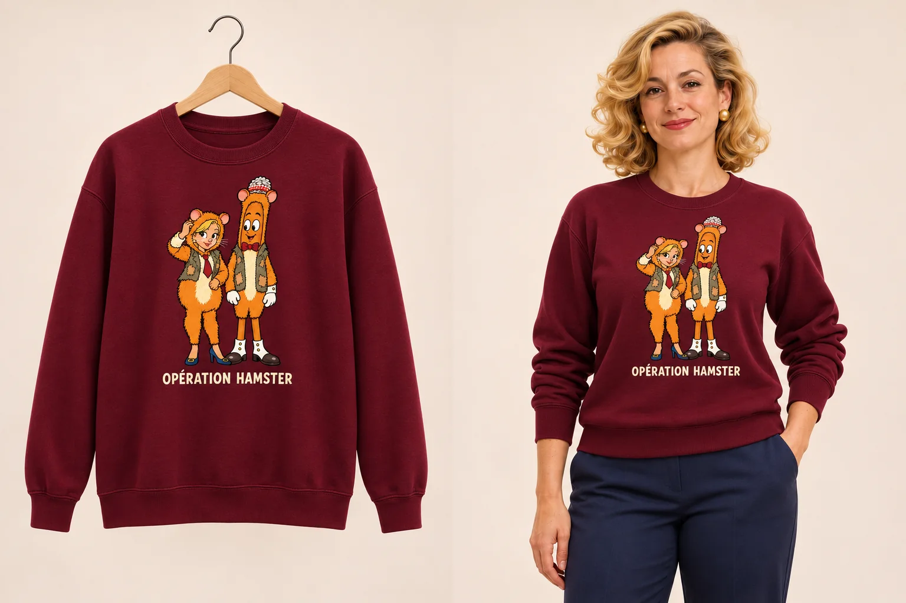
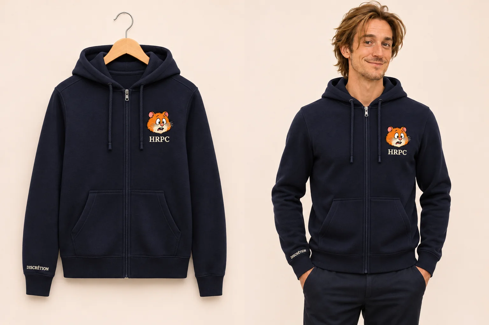
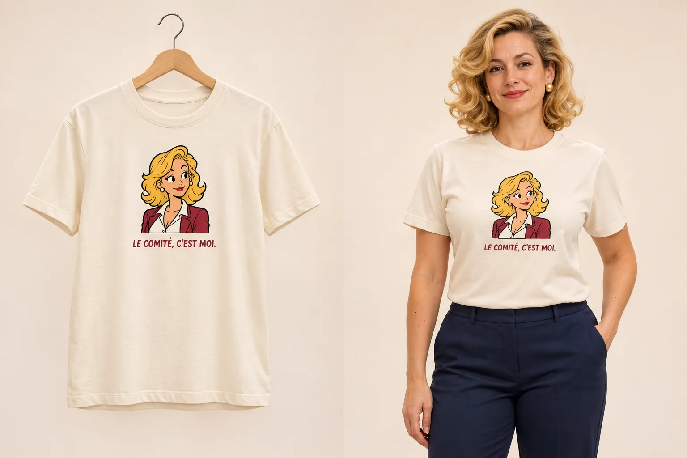
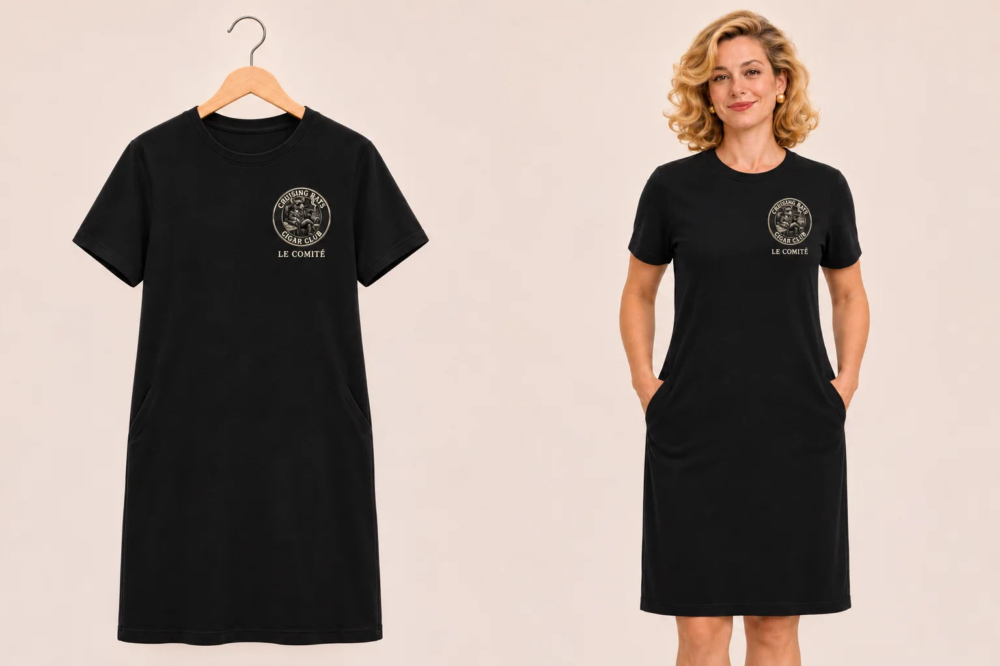
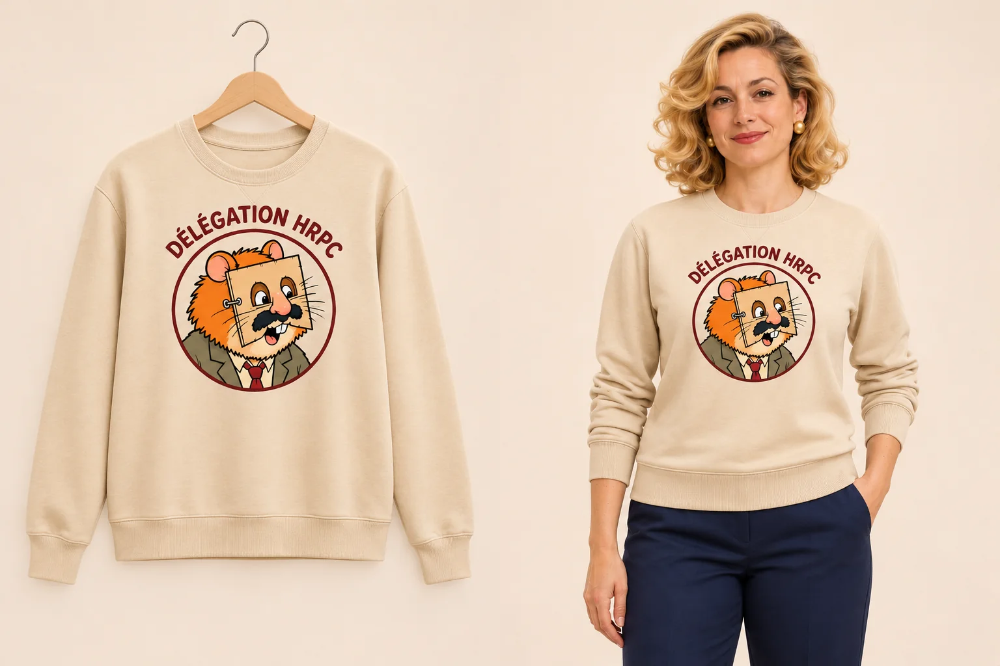
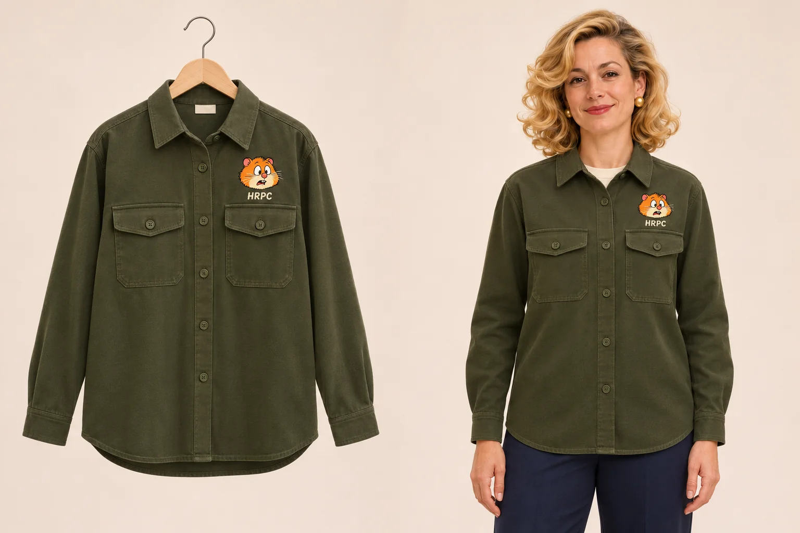
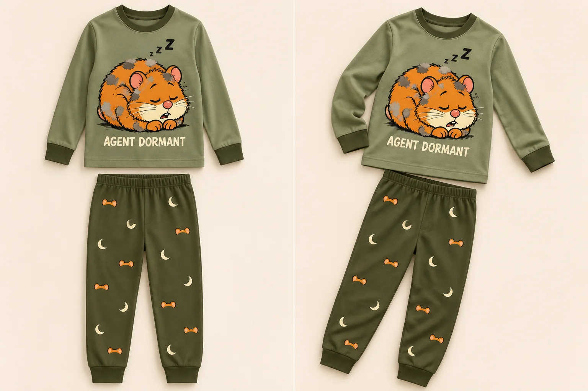

H.01 · CRCC
T-shirt Cigarolo — Le Comité
Écru · Jersey de coton
« Le Comité a pris acte. »Voir la pièce et ses visuels →
15 pièces, trois rayons et une rivalité qui déborde des dossiers. Cigarolo, Pipa et les hamsters du HRPC se partagent le vestiaire.
Chaque article a sa propre fiche et ses visuels. Pipa et Louis prennent la pose.

Louis prend la pose. Le dossier reste ouvert.
Écru · Jersey de coton
« Le Comité a pris acte. »Voir la pièce et ses visuels →

Vert forêt · Molleton de coton
« Instrument officiel. Précautions officieuses. »Voir la pièce et ses visuels →

Noir · Toile de coton
« Le Club devant. Le Club derrière. »Voir la pièce et ses visuels →

Vert olive · Jersey de coton
« Votre couverture semble irréprochable. »Voir la pièce et ses visuels →

Bleu marine · Molleton de coton
« La discrétion commence par un uniforme. »Voir la pièce et ses visuels →
Pipa conserve toute autorité sur le vestiaire.

Écru · Jersey de coton
« Le Comité, c’est moi. »Voir la pièce et ses visuels →
Bordeaux · Molleton de coton
« Comportez-vous naturellement. »Voir la pièce et ses visuels →

Noir · Jersey épais de coton
« Tenue de séance permanente. »Voir la pièce et ses visuels →

Sable · Molleton de coton
« Nous venons en toute discrétion. »Voir la pièce et ses visuels →

Vert olive · Toile de coton
« L’infiltration peut rester élégante. »Voir la pièce et ses visuels →
Petit format. Grandes exigences.

Écru · Jersey de coton
« Je demande à voir le règlement. »Voir la pièce et ses visuels →

Vert forêt · Molleton de coton
« Je passe totalement inaperçu. »Voir la pièce et ses visuels →

Écru et bleu nuit · Jersey de coton
« Dossier clos jusqu’à demain. »Voir la pièce et ses visuels →

Orange rouille · Jersey de coton
« Les renforts sont arrivés. »Voir la pièce et ses visuels →

Vert sauge et olive · Jersey de coton
« Mission : ne plus donner signe de vie avant le petit-déjeuner. »Voir la pièce et ses visuels →